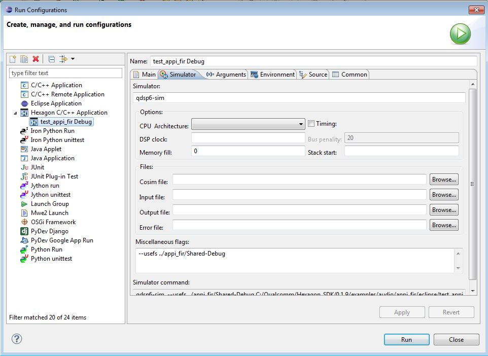

Audio unit testing
Overview
The Hexagon SDK provides a framework that enables unit testing of created modules. Unit testing can be done using
-
Eclipse projects Import existing Eclipse project into workspace, compile the project and easily run and debug unit test executable.
-
Quality tests(qtests). qtests are specified like any other target in a project's makefile. They are automatically run as part of the build process to complete the build/test development process. The tests themselves are compiled into Hexagon binaries and run via the Hexagon simulator. Currently qtests are only meant to be run on the Hexagon simulator, not on target.
Architecture
Support libraries
The SDK provides general unit test support libraries:
In addition, the SDK provides audio specific test support libraries.
CAPIv2 Interface
-
test_capi_v2
-
capi_v2_utils_prop
-
capi_v2_test
This library provides a test framework for verifying the functionality of objects that export APPI. For more information see CAPIv2 test framework
APPI Interface
-
test_appi
-
appi_test
This library provides a test framework for verifying the functionality of objects that export APPI. For more information see APPI test framework
CAPIv2 test framework
To know about CAPIv2 unit test framework functions and configuration file, please refer CAPIv2 unit test framework
APPI test framework
The support library test_appi contains an APPI specific test framework that allows for the verification of objects exporting the APPI interface. The framework is run by calling the framework's entry point from within a qtest's Test sources. The signature of the entry point is as follows:
ADSPResult test_appi_main(getsize_f_t getsize_f, init_f_t init_f,
const char *filename_in, const char *filename_out,
const char* filename_config)
- getsize_f and init_f should contain function pointers to the pp module's
getsize and init functions. These can be obtained by calling dlsym() in
the qtest's [[Test sources]].
- filename_in is the name of an audio file that should be processed by the
test
- filename_out is the name of the output file generated by processing
filename_in.
- filename_config is the [[Test configuration file]] that determines how the
framework should verify the APPI module.
The qtests for Hexagon SDK examples passthru and gain use the APPI Test Framework. For more detailed information about how to call it see those example's qtest source files.
Currently the APPI Test Framework does not support verification of the output audio file vs a known reference audio file. Future versions of the Hexagon SDK hope to add support for this feature. Until then the verification of the output file is left to the user.
test_appi
See the main unit_test documentation.
Test configuration file
Each test is configured using a configuration file. This file contains a list of commands to execute. The test framework reads and executes the commands from the config file sequentially. Note that the commands are case sensitive and should be entered exactly as they appear below.
The test framework supports the following commands and their parameters:
-
-
NumBuffers <number>
-
-
-
SetNumInChannels <number>
-
SetNumOutChannels <number>
-
SetInSamplingRate <number>
-
SetOutSamplingRate <number>
-
SetBytesPerSample <number>
-
-
-
SetNumInChannelsAndMapping <number>
-
SetNumOutChannels <number>
-
SetInSamplingRate <number>
-
SetOutSamplingRate <number>
-
SetBytesPerSample <number>
-
RefPayloadSizeInBytes <number>
-
-
-
PayloadSizeInBytes <number>
-
-
-
PayloadSizeInBytes <number>
-
<payload>
-
ProcessData
Processes input buffers from the input file to the output file.
This command exercises the pp module's APPI methods get_input_required() and process().
e.g.
ProcessData NumBuffers 10
SetMediaFormat
Sets the media parameters. This should be done to verify the correct handling of specific media parameters and also before a call to ProcessData to set up the medial parameters to be used during the processing. It sets the APPI library with the specified parameters by calling the pp module function reinit().
This command exercises the pp module's APPI method reinit().
e.g.
SetMediaFormat SetNumInChannels 2 SetNumOutChannels 2 SetInSamplingRate 48000 SetOutSamplingRate 48000 SetBytesPerSample 2
SetMediaFormatWithMapping
Sets the media parameters along with channel mapping. This should be done to verify the correct handling of specific media parameters and also before a call to ProcessData to setup the medial parameters to be used during the processing. It sets the APPI library with the specified parameters by calling the pp module function reinit().
This command exercises the pp module's APPI method reinit().
e.g.
SetMediaFormatWithMapping
SetNumInChannelsAndMapping 3
1 2 3
SetNumOutChannels 3
SetInSamplingRate 48000
SetOutSamplingRate 48000
SetBytesPerSample 2
SetParamInband
Sets a parameter value. The information on the parameter and its payload are specified after the PayloadSizeInBytes parameter as illustrated in the example below.
This command exercises the pp module's APPI method set_param().
e.g.
SetParamInband PayloadSizeInBytes 24 00 00 00 00 # Data Payload address 10 00 00 00 # Size of Payload F1 FF FF FF # MODULE_ID_GAIN_CTRL 0xFFFFFFF1 11 10 00 10 # PARAM_ID_GAIN_CTRL_MASTER_GAIN 0x10001011 04 00 00 00 # Param Size and Padding 02 00 00 00 # Gain value and reserved
GetParamInband
Gets a parameter value. The information on the parameter and its payload are specified after the PayloadSizeInBytes parameter as illustrated in the example below. Note that GetParamInband contains an additional parameter called RefPayloadSizeInBytes that specifies the expected binary value of the received parameter.
This command exercises the pp module's APPI method get_param().
e.g.
GetParamInband PayloadSizeInBytes 16 00 00 00 00 # Data Payload address F1 FF FF FF # MODULE_ID_GAIN_CTRL 0xFFFFFFF1 08 07 01 00 # APPI_PARAM_ID_ALGORITHMIC_DELAY 0x00010708 04 00 00 00 # Param Size and Padding RefPayloadSizeInBytes 4 00 00 00 00
CAPI test framework
The unit test file contains a CAPI specific test framework that allows for the verification of objects exporting the CAPI interface. The framework is run by calling the framework's entry point from within a qtest's Test sources. The signature of the entry point is as follows:
void test_capi_main( capi_getsize_f getsize_f, capi_ctor_f ctor_f, void *pFmtBlk, const char* filename_in, const char* filename_out ) - getsize_f and ctor_f should contain function pointers to the CAPI module's getsize and ctor functions. These can be obtained by calling dlsym() in the qtest's [[Test sources]]. - pFmtBlk corresponds to pointer to format block sent by APPS processor while executing media format update command - filename_in is the name of an audio file that should be processed by the test - filename_out is the name of the output file generated by processing filename_in.
The qtests for SDK example pcm_decoder uses the CAPI Test Framework. For more detailed information about how to call it see capi_pcm_decoder.cpp file
Currently the CAPI Test Framework does not support verification of the output audio file vs a known reference audio file. Future versions of the SDK hope to add support for this feature. Until then the verification of the output file is left to the user. Also, in CAPI Test Framework media format block is set inside main. SDK users are expected to modify module_test.cpp file. Currently, Media format block pointer is sent to test_capi_main. In future versions of SDK, this is expected to move to a configuration file, hence avoiding manual addition of media format block.
Unit testing CAPI/APPI/CAPIv2 modules
NOTE : Present context covers unit testing of APPI FIR example. However, similar steps need to be followed for testing CAPIv2 and CAPI modules.
Eclipse based
-
Import the library project from specific example to be tested. Import the project as Common Library (.lib/.so). For more information on this please refer IDE Docs As an example, appi_fir is used. Similar steps should be followed for other examples.
File -> Import -> Hexagon C/C++ Project Type : Common Library (.lib/.so)
Ensure that project path, SDK root and Tools root are set appropriately.
-
Build the library project
Right click on project -> Build Configuration -> Build all
This project builds Dynamic and Static libraries in debug and release mode. Verify all libraries to be built.
-
Import the test project from specific example to be tested. Import the project as Executable (.exe). For more information on this please refer IDE Docs As an example, appi_fir is used. Similar steps should be followed for other examples.
File -> Import -> Hexagon C/C++ Project Type : Executable (.exe)
Ensure that project path, SDK root and Tools root are set appropriately.
-
Build the test project
Right click on project -> Build Configuration -> Build all
This project builds test Executable in debug and release mode.
By default, Eclipse project builds Static module. To test dynamic library add __V_DYNAMIC__ flag to Eclipse test projects.
-
To run/debug unit test exe.
-
Create a new run configuration for unit test executable.
Right click on project -> Run As -> Run Configurations -> Hexagon C/C++ Application
-
Input Arguments to binary
-
Add input arguments to the executable.
For APPI, input, output and config files have to be specified. ex. appi_fir
-i ../../data/wnoise_48k_stereo.raw -o ../../data/output_wnoise_48k_stereo.raw -c ../../data/hpf.cfg
For CAPI, input and output files have to be added. ex. capi_pcm_decoder
-i ../../data/input.raw -o ../../data/output.raw
For CAPIv2, input and output files have to be added. ex. capi_v2_decimate
-i ../../data/input.raw -o ../../data/output.raw -c ../../data/decimation_factor_set.cfg
-
Instead of adding input arguments manually, use qhut file
Right click on project test_appi_fir -> New -> File Create a new file named : test_list.qhut Create new test cases using qhut file
NOTE : This should not be used for capi example as no configuration file supported.
-
-
If dynamic library is being tested then specify it's relative path using “usefs” flag. Add the following simulator flag in Miscellaneous box on Simulator tab. Example below shows the method to test appi_fir.so Shared debug library.
--usefs ../appi_fir/Shared-Debug
 Similarly, other simulation parameters can be passed on to simulator from this UI. All simulation parameters can be found on Hexagon Programmers Reference manual. Explore these parameters to have close results to target on simulator.
-
NOTE : All the Test Executables projects are provided with a .launch and .qhut file. Launch file(.launch) file provides required configuration to Run/Debug the project. Step 5 can be avoided by clicking on “Run” or “Debug” icon by selecting the project. This will Run/Debug with the configuration provided in launch file
Command-line based unit testing
In command-line based unit test framework, the library is built first and then unit tested using a single command.
As a reference example, appi_fir is used. Please execute similar commands to test other APPI/CAPI/CAPIv2 examples.
-
Instructions to test Dynamic Library :
-
Open a CLI shell and navigate to <HEXAGON_SDK_ROOT>\examples\audio\appi_fir
cd <HEXAGON_SDK_ROOT>\examples\audio\appi_fir
-
Execute the following command to test Dynamic Library.
Target = hexagon ; Toolset version = v81 ; Arch Version = V65 ; Flavor = Debug ; Options = dynamic
make V=hexagon_Debug_dynamic_toolv81_v65 tree VERBOSE=1
-
Verify the test to be passed
-
-
Instructions to test Static Library :
-
Open a CLI shell and navigate to <HEXAGON_SDK_ROOT>\examples\audio\appi_fir
cd <HEXAGON_SDK_ROOT>\examples\audio\appi_fir
-
Execute the following command to test Static Library
Target = hexagon ; Version = V5 ; Flavor = Debug ;
make V=hexagon_Debug tree VERBOSE=1
-
Verify the test to be passed
-
For more information on building using make.d, please refer make.d documentation.
NOTE : In command-line based unit testing, input arguments to executable are hard coded in the unit test source file.
Also, for loading a dynamic library, —usefs flag is added to build system.
Measuring KPPS of algorithm in unit testing
To measure KPPS requirement, measure the number of cycles consumed by APPI process() function for one block of data. If there is no block size in the algorithm, assume it to be around 50-100 samples to eliminate the effect of the fixed overheads in the function.
KPPS = process_cycles / BLOCK_SIZE * sampling_rate
Copyright © 2018 Qualcomm Technologies Inc. All rights reserved.